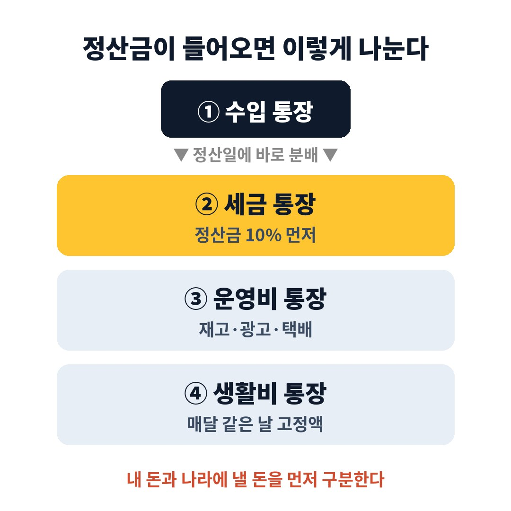

매출이 달마다 들쭉날쭉한 1인 개인사업자분들이라면 아래 순서대로 확인해 보시면 됩니다.
특히 부가세나 종합소득세를 내는 달만 되면 "그 많던 돈이 다 어디 갔지" 하며 통장을 다시 열어보시는 분께 꼭 필요한 이야기입니다.
저는 스마트스토어와 쿠팡에서 생활용품을 파는 온라인 쇼핑몰을 운영하고 있습니다.
그리고 저 역시 몇 년 동안 똑같은 실수를 반복했습니다.
처음 사업을 시작했을 때 저는 정산금, 광고비, 생활비를 통장 하나로 관리했습니다.
잔고가 늘어나면 장사가 잘된다고 믿었고, 그 돈으로 재고를 더 사고 광고비를 늘렸습니다.
문제는 1월과 7월이었습니다.
부가세 확정신고를 하는 순간 통장 잔고가 내야 할 세금보다 적다는 사실을 알게 됐습니다.
결국 재고를 할인 판매해서 겨우 세금을 맞췄고, 그달 장사는 사실상 적자였습니다.
장부상으로는 분명 이익이 났는데 손에 쥔 현금이 없으니 답답함이 더 컸습니다.
셀러 커뮤니티에도 세금 시즌마다 "부가세 낼 돈이 없다"는 글이 꾸준히 올라옵니다.
원인은 대부분 같습니다.
정산금 중 일부는 처음부터 내 돈이 아니라 나라에 낼 돈인데, 그걸 전부 내 매출로 착각하는 것입니다.
매출이 클수록 이 착각도 커지기 때문에 장사가 잘되는 시기에 오히려 더 위험해집니다.

그래서 저는 통장을 네 개로 나눴습니다.
첫째는 쇼핑몰 정산금이 들어오는 수입 통장입니다.
둘째는 세금만 모아두는 세금 통장입니다.
셋째는 재고, 광고비, 택배비를 내는 운영비 통장입니다.
넷째는 월급처럼 정해진 금액만 옮기는 생활비 통장입니다.
핵심은 수입 통장에 돈을 쌓아두지 않고 정산일에 바로 나눠 보내는 것입니다.
저는 정산금이 들어오는 날 그 금액의 10%를 세금 통장으로 가장 먼저 옮깁니다.
부가세는 매출세액에서 매입세액을 뺀 금액이라 실제 납부액은 이보다 적을 때가 많습니다.
그래도 5월 종합소득세까지 함께 대비하려면 넉넉하게 떼어두는 편이 훨씬 마음 편했습니다.
세금 통장은 하루만 맡겨도 이자가 붙는 파킹통장으로 만들었고, 체크카드는 일부러 연결하지 않았습니다.
남은 금액은 운영비 통장으로 보내고, 생활비 통장에는 매달 같은 날 같은 금액만 이체합니다.
이체는 모바일 뱅킹의 자동이체 기능으로 걸어두어서 바쁜 날에도 빠뜨리지 않도록 했습니다.
세금 통장을 채운 뒤 처음 맞은 부가세 신고 때는 납부 금액을 확인하는 일이 처음으로 담담했습니다.
세금을 내고도 통장에 돈이 남았고, 그 돈은 다음 종합소득세 납부에 그대로 썼습니다.
세금 때문에 급하게 재고를 헐값에 넘기는 일도 그 뒤로는 한 번도 없었습니다.
운영비 통장 잔고만 봐도 이번 달 장사가 남았는지 바로 알 수 있게 됐습니다.
광고비를 늘릴지 줄일지도 감이 아니라 숫자로 판단합니다.
생활비를 고정하니 장사가 잘된 달에 괜히 씀씀이가 커지는 습관도 함께 사라졌습니다.
저는 이것이 사업자 재테크의 진짜 첫걸음이라고 생각합니다.
투자 수익률을 고민하기 전에 내 돈과 내 돈이 아닌 돈을 구분하는 것이 먼저입니다.
1) 지금 쓰는 사업자 통장을 수입 통장으로 정합니다.
2) 세금 통장을 새로 하나 만들고 카드는 연결하지 않습니다.
3) 정산일마다 정산금의 일정 비율을 세금 통장으로 먼저 옮깁니다.
4) 생활비는 월급처럼 매달 같은 날 같은 금액만 받습니다.
5) 부가세 신고 달인 1월과 7월, 종합소득세 신고 달인 5월을 달력에 미리 표시합니다.
떼어두는 비율은 업종과 매입 구조에 따라 달라지므로 홈택스의 지난 신고 내역을 보고 내 상황에 맞게 정하시는 것이 좋습니다.
매출이 불규칙한 사업자에게 가장 무서운 것은 적은 매출이 아니라 예상하지 못한 지출입니다.
통장 4개를 만드는 데 드는 시간은 30분이면 충분합니다.
다음 세금 시즌에 웃고 싶으시다면 이번 정산일부터 10%를 먼저 떼어두는 습관을 시작해 보시길 바랍니다.
※ 본 글은 개인 경험을 바탕으로 한 정보이며, 세금 신고와 납부는 본인 상황에 맞게 세무 전문가와 확인하시길 바랍니다.